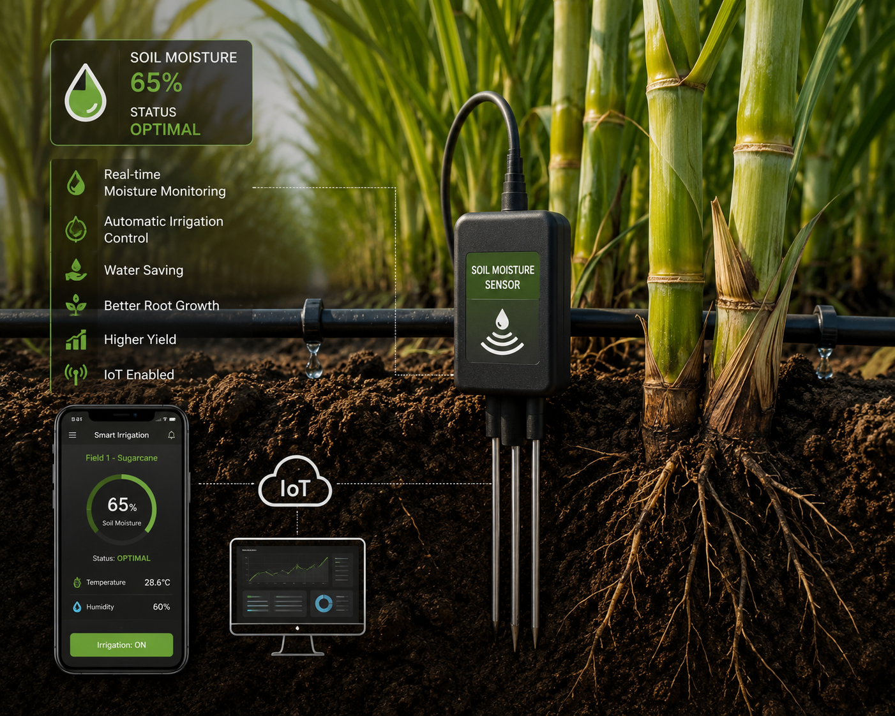

A soil moisture sensor is an essential component of modern smart irrigation systems used in sugarcane cultivation. It measures the amount of moisture present in the soil and provides real-time data to farmers or automated irrigation systems. The sensor is placed near the root zone of the sugarcane plants, where it continuously monitors soil moisture levels. When the soil becomes too dry, the sensor detects the decrease in moisture and can automatically trigger the irrigation system to supply water. Once the soil reaches the desired moisture level, the irrigation system stops, preventing overwatering. This technology helps conserve water, reduces unnecessary irrigation, and ensures that sugarcane plants receive the right amount of water at the right time. Maintaining optimal soil moisture promotes healthy root development, improves nutrient absorption, increases sugar content, and enhances overall crop yield. In addition, soil moisture sensors reduce labor costs, save energy, and minimize the risk of plant diseases caused by excessive watering. By integrating soil moisture sensors with drip irrigation and Internet of Things (IoT) technology, farmers can monitor their fields remotely through smartphones or computers, making sugarcane farming more efficient, sustainable, and environmentally friendly.